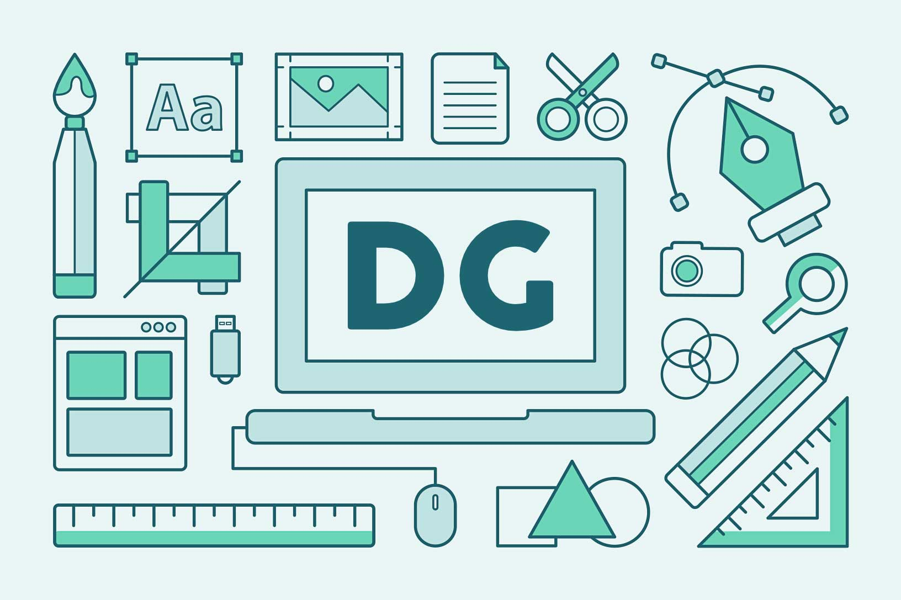
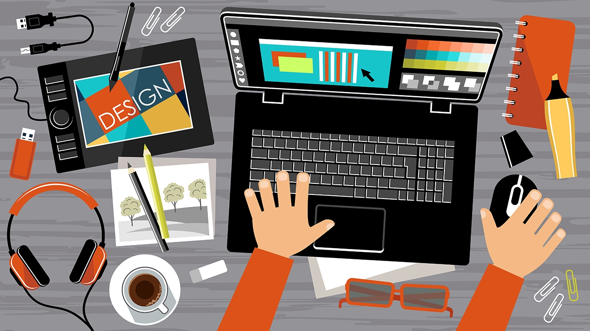
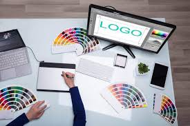

¿Qué es un diseñador gáfico?
Los diseñadores gráficos están encargados de comunicar un mensaje de forma visual, por lo que son figuras clave en el marketing de cualquier empresa mexicana, pero también pueden destacarse en el campo del arte, las editoriales, los medios de comunicación y en empresas de desarrollo web.

Labores de un diseñador gráfico
- Participar en campañas de comunicación, desde un consepto hasta la matealización, publicación y difusión.
- Establecer el presupuesto de un proyecto.
- Crear mensajes que aprobechen las imágenes para facilitar su comprención.
- Detectar las necesidades de su clientela y ofrecer soluciones comunicativas visuales.
- Diseñar la imagen de una empresa, elegiendo los mejores colores, tipografías y maquetación. Creat logotipos, folletos, packaging, etiquetas, infografías,etc.
- Colaborar con el diseñador web para crear páginas web.
- Realizar trabajos de edición y tratar fotografías, imágenes y vídeos digitales.
- Hacer diseños utilizando imágenes tridimencionales.
- Adaptar formatos, estructuras y patrones.
- Determinar los recursos que se utilizarán en colaboracón con el cliente.
- Incluir las modificaciones solicitadas en el producto final.
- Coordinar equipos de trabajo formados por dieferentes profecionalistas de la imágen y desarrolladores.
- Ejecutar los proyectos ajustándose a costos y calendarizaciones establecidas.
- Informar a la clientela sobre los avances realizados.
- Usar bancos de fotos, ilustraciones y guías tipográficas
- Supervisar la entrega del proyecto final.

¿Cuál es la principal función de un diseñador gráfico?
Podríamos decir que un diseñador gráfico es un experto en las mejores prácticas de la comunicación visual. Su misión no es solo consiste en bocetar, dibujar y diseñar las imágenes que nuestra marca muestra al público objetivo.
Además de que es el encargo de transmitir un mensaje que sea perfectamente claro con sólo imágenes para las personas o clientes potenciales de una empresa. El diseño gráfico tiene elementos únicos que transmiten sensaciones y convencen a los consumidores.
En otras palabras, el diseño gráfico es el responsable de convertir mensajes e ideas en realidad. Para conseguirlo, utiliza imágenes que deben comunicarse efectivamente a la audiencia, incluso a través de dibujos, bocetos, documentos, anuncios o libros.
Al contrario de lo que podríamos llegar a pensar, el diseño no es una cuestión de gusto o preferencia de color. En cambio, esta profesión sigue algunas pautas específicas para garantizar que el mensaje llegue al destinatario de la manera precisa y adecuada.
Importancia de un diseñador gráfico en el mundo dijital
Los profesionales del diseño gráfico tienen la facultad de combinar el arte y la tecnología para compartir ideas o mensajes a través de imágenes digitales e impresas. Utilizan una variedad de elementos para lograr efectos llamativos en diferentes medios de comunicación, que pueden ser diversos como medios digitales, revistas, banners y mucho más.
Los diseñadores gráficos juegan un papel cada vez más importante en el marketing de las empresas. Podríamos decir que cada uno de ellos se especializa en algún área o tipo de contenido.
Por lo que es fundamental que los diseñadores se mantengan actualizados con las tendencias, nuevas herramientas y todo aspecto relacionado con la industria donde se desenvuelve, solo de esta manera se conseguirá contar con las mejores prácticas para transmitir los mensajes adecuados sin importar el target al que se esté apuntando.
Los diseñadores deben considerar que parte de su trabajo será mantenerse en contacto con colegas y clientes para asegurarse de que cada documento, imagen o producto sea adecuado para su propósito. Además, siempre tendrán que buscar diferentes enfoques para llegar a su público objetivo y lograr que reconozcan una marca.

Beneficios de contar con un diseñador gráfico en tu empresa
El diseño gráfico ayuda a optimizar la comunicación de tu marca, busca la mejor manera de comunicar. Ten en cuenta que una marca con una imagen bien conformada te ayudara a:
- Diferencia tu empresa de la competencia.
- Mejorá el consepto que se tiene de el negocio.
- Atraerá a los clientes.
- Añadira valor a la empresa.
- Ayudará a identificar tu negocio.
